BLASE on Simulated Data
compare_simulated_data.Rmd
library(blase)
library(SingleCellExperiment)
library(tradeSeq)
library(slingshot)
library(scran)
library(scater)
library(BiocParallel)
library(dyngen)
library(bluster)
library(fs)
library(utils)
RNGversion("3.5.0")
#> Warning in RNGkind("Mersenne-Twister", "Inversion", "Rounding"): non-uniform
#> 'Rounding' sampler used
SEED = 7
set.seed(SEED)In this article, we’ll simulate a dataset, and show that BLASE works well with it, mapping pseudobulked SC counts to the same SC data. We split the simulated data in half and use one half of it as the scRNA-seq, and the other for pseudobulking.
N_CORES = 4
if (ami::using_ci()) {
N_CORES = 2
}Get the simulation data
Steps to generate this data are available in generate-simulated-data-object.
data(processed_simulated_data_SCE, package="blase")Here we’ll set up the SCE and preprocess the data ready for
trajectory analysis. We show the sim_time mapped onto it,
which shows the true simulated trajectory.
data(processed_simulated_data_SCE, package="blase")
gridExtra::grid.arrange(
plotPCA(processed_simulated_data_SCE, colour_by="label"),
plotUMAP(processed_simulated_data_SCE, colour_by="label"),
plotPCA(processed_simulated_data_SCE, colour_by="sim_time"),
plotUMAP(processed_simulated_data_SCE, colour_by="sim_time"),
ncol=2
)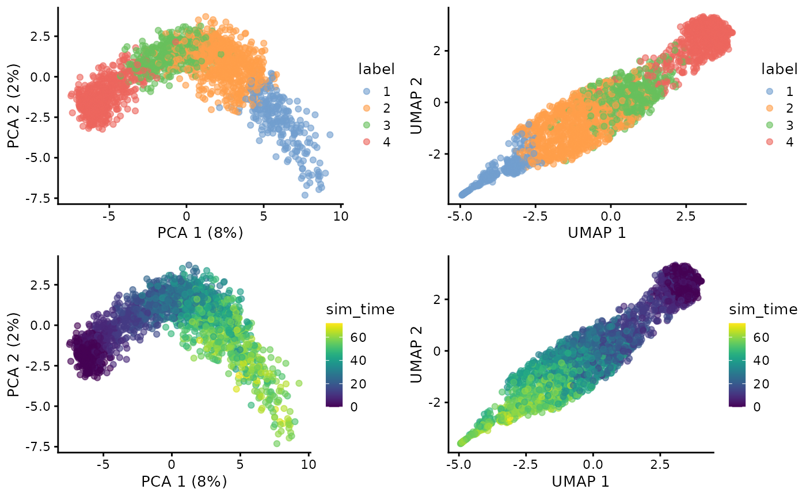
The start cluster is labeled 4.
START_CLUSTER = 4SC Trajectory Analysis
Now we’ll use slingshot to infer a trajectory, and tradeseq to identify highly variable genes. We will compare the trajectory to the simulated time below.
sc_sce
#> class: SingleCellExperiment
#> dim: 455 1030
#> metadata(3): traj_milestone_network traj_progressions
#> traj_dimred_segments
#> assays(6): counts logcounts ... counts_protein normcounts
#> rownames(455): M1_TF1 M2_TF1 ... HK49 HK50
#> rowData names(20): module_id basal ... mol_mrna mol_protein
#> colnames(1030): cell2 cell3 ... cell1996 cell1997
#> colData names(6): step_ix simulation_i ... label useAsBulk
#> reducedDimNames(3): MDS PCA UMAP
#> mainExpName: NULL
#> altExpNames(0):
sc_sce <- slingshot(sc_sce, reducedDim = 'UMAP', clusterLabels='label', start.clus=START_CLUSTER)
gridExtra::grid.arrange(
plotPCA(sc_sce, colour_by="sim_time"),
plotPCA(sc_sce, colour_by="slingPseudotime_1"),
plotUMAP(sc_sce, colour_by="sim_time"),
plotUMAP(sc_sce, colour_by="slingPseudotime_1"),
plotPCA(sc_sce, colour_by="label"),
plotUMAP(sc_sce, colour_by="label"),
ncol=2
)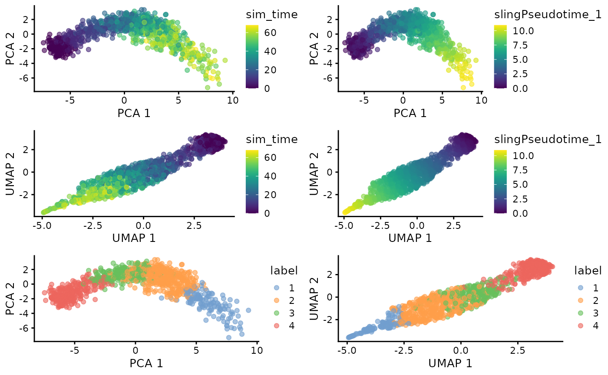
sc_sce <- fitGAM(sc_sce, parallel=T, BPPARAM=MulticoreParam(N_CORES), nknots=4)
associationTestResult <- associationTest(sc_sce, lineages=T, global=F, contrastType="consecutive")Analyse with BLASE
We start by tuning the parameters for BLASE. See the vignette for more details.
genelist = blase::get_top_n_genes(associationTestResult, n_genes = 200, lineage = 1)
res = find_best_params(sc_sce,
genelist,
split_by="pseudotime_range",
pseudotime_slot="slingPseudotime_1",
bins_count_range = seq.int(3, 10, 1),
gene_count_range = seq.int(3, 60, 3))
plot_find_best_params_results(res)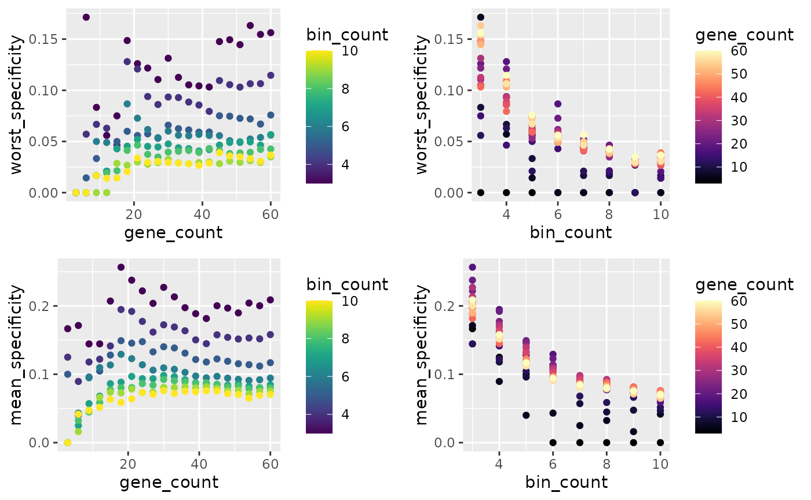
genes = 30
bins = 5
blaseData = as.BlaseData(sc_sce, pseudotime_slot="slingPseudotime_1", n_bins=bins, split_by="pseudotime_range")
blaseData@genes = genelist[1:genes]
evaluate_parameters(blaseData, make_plot = TRUE)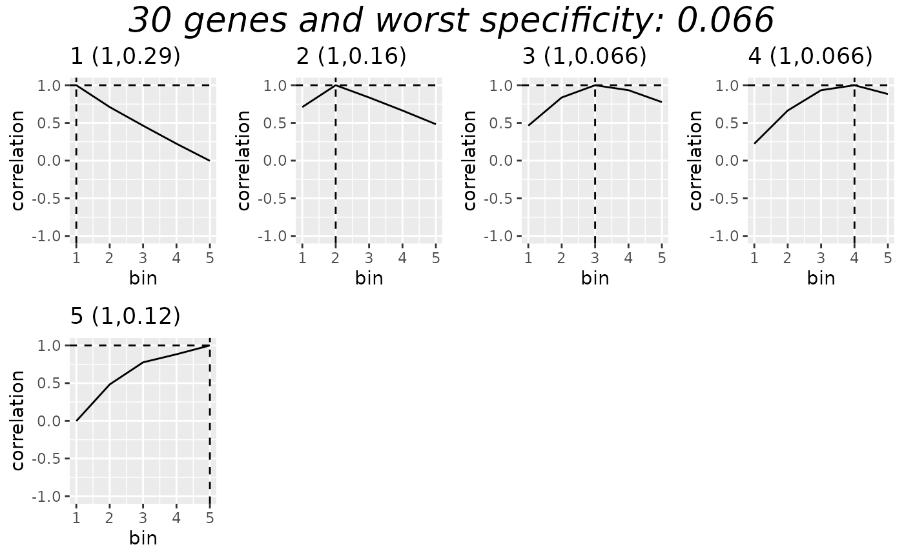
#> [1] 0.06590 0.14024Prepare Bulk
Here we set up the same trajectory with the bulk dataset, and split it into separate “bulk” counts.
bulk_sce
#> class: SingleCellExperiment
#> dim: 455 970
#> metadata(3): traj_milestone_network traj_progressions
#> traj_dimred_segments
#> assays(6): counts logcounts ... counts_protein normcounts
#> rownames(455): M1_TF1 M2_TF1 ... HK49 HK50
#> rowData names(20): module_id basal ... mol_mrna mol_protein
#> colnames(970): cell1 cell6 ... cell1999 cell2000
#> colData names(6): step_ix simulation_i ... label useAsBulk
#> reducedDimNames(3): MDS PCA UMAP
#> mainExpName: NULL
#> altExpNames(0):
bulk_sce <- slingshot(bulk_sce, reducedDim = 'UMAP', clusterLabels='label', start.clus=START_CLUSTER)
gridExtra::grid.arrange(
plotPCA(bulk_sce, colour_by="sim_time"),
plotPCA(bulk_sce, colour_by="slingPseudotime_1"),
plotUMAP(bulk_sce, colour_by="sim_time"),
plotUMAP(bulk_sce, colour_by="slingPseudotime_1"),
ncol=2
)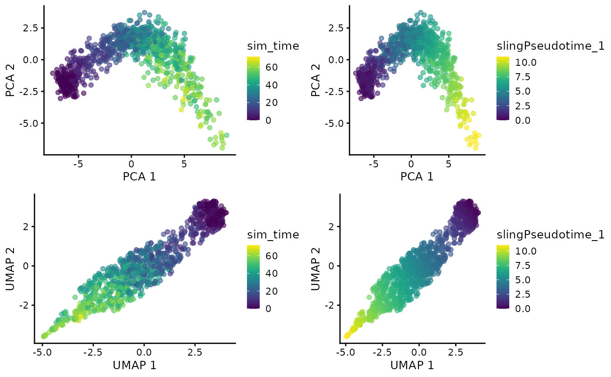
bulk_sce = assign_pseudotime_bins(bulk_sce, split_by='pseudotime_range', n_bins = bins, pseudotime_slot="slingPseudotime_1")
bulk_sce$replicate = round(runif(n=ncol(bulk_sce), min=1, max=2))
bulkified_bins = blase::get_bins_as_bulk(bulk_sce, min_cells_for_bulk = 20)Map the bulk to the single cell
Now we’ll map the bulk onto the single cell data with BLASE. We can see the bins and mapping results below. Most are confidently mapped correctly, and 4 are not confidently mapped, but still correctly.
mapping_results = c()
for (bulkname in colnames(bulkified_bins)) {
res = map_best_bin(blaseData, bulkname, bulkified_bins)
mapping_results = c(mapping_results, res)
print(res)
}
#> MappingResult for 'bin_1_rep_1': best_bin=1 correlation=0.946888823830309 top_2_distance=0.2476
#> Confident Result: TRUE (next max upper 0.769997447991129 )
#> with history for scores against 5 bins
#> Bootstrapped with 200 iterations
#> MappingResult for 'bin_1_rep_2': best_bin=1 correlation=0.950443436534111 top_2_distance=0.2694
#> Confident Result: TRUE (next max upper 0.754488635370526 )
#> with history for scores against 5 bins
#> Bootstrapped with 200 iterations
#> MappingResult for 'bin_2_rep_1': best_bin=2 correlation=0.957806989320484 top_2_distance=0.0691
#> Confident Result: TRUE (next max upper 0.906870888511905 )
#> with history for scores against 5 bins
#> Bootstrapped with 200 iterations
#> MappingResult for 'bin_2_rep_2': best_bin=2 correlation=0.975988675682019 top_2_distance=0.1295
#> Confident Result: TRUE (next max upper 0.8652892971342 )
#> with history for scores against 5 bins
#> Bootstrapped with 200 iterations
#> MappingResult for 'bin_3_rep_1': best_bin=3 correlation=0.987316446339184 top_2_distance=0.0556
#> Confident Result: TRUE (next max upper 0.951713419200516 )
#> with history for scores against 5 bins
#> Bootstrapped with 200 iterations
#> MappingResult for 'bin_3_rep_2': best_bin=3 correlation=0.985091257143017 top_2_distance=0.0554
#> Confident Result: TRUE (next max upper 0.950155786763199 )
#> with history for scores against 5 bins
#> Bootstrapped with 200 iterations
#> MappingResult for 'bin_4_rep_1': best_bin=4 correlation=0.989654027705869 top_2_distance=0.0652
#> Confident Result: TRUE (next max upper 0.938139741878059 )
#> with history for scores against 5 bins
#> Bootstrapped with 200 iterations
#> MappingResult for 'bin_4_rep_2': best_bin=4 correlation=0.98053176710876 top_2_distance=0.0685
#> Confident Result: TRUE (next max upper 0.937145405732266 )
#> with history for scores against 5 bins
#> Bootstrapped with 200 iterations
#> MappingResult for 'bin_5_rep_1': best_bin=5 correlation=0.955157502867431 top_2_distance=0.1235
#> Confident Result: TRUE (next max upper 0.851897232287168 )
#> with history for scores against 5 bins
#> Bootstrapped with 200 iterations
#> MappingResult for 'bin_5_rep_2': best_bin=5 correlation=0.945822678007565 top_2_distance=0.0772
#> Confident Result: TRUE (next max upper 0.884636783758664 )
#> with history for scores against 5 bins
#> Bootstrapped with 200 iterations
sc_sce = assign_pseudotime_bins(sc_sce, split_by = 'pseudotime_range', n_bins = bins, pseudotime_slot='slingPseudotime_1')
gridExtra::grid.arrange(
plotUMAP(bulk_sce, colour_by="sim_time"),
plotUMAP(bulk_sce, colour_by="slingPseudotime_1"),
plotUMAP(sc_sce, colour="pseudotime_bin"),
ncol=3
)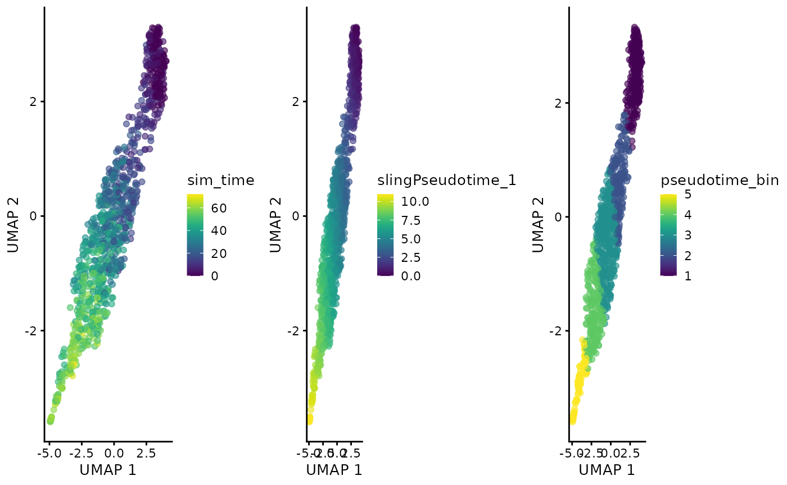
blase::plot_mapping_result_heatmap(rev(mapping_results))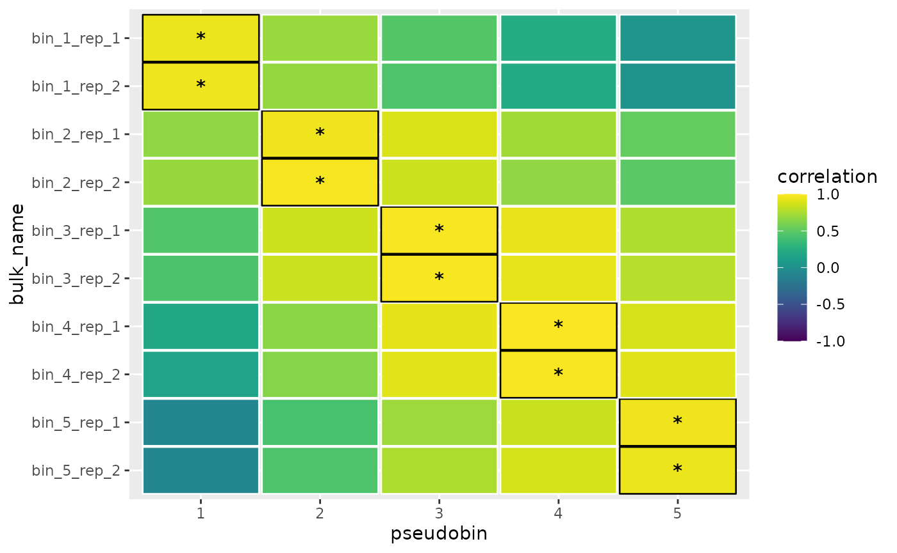
Now we can look at the population proportions of the bins.
Each row below shows the following four plots: 1. The SC label proportions for a given bin 2. The bulk label proportions for a given bin 3. Mapping correlations for replicate 1 of a given bin 4. Mapping correlations for replicate 2 of a given bin
gridExtra::grid.arrange(
blase::plot_bin_population(sc_sce, 1, group_by_slot="label") + ggtitle("SC Labels in Bin 1"),
blase::plot_bin_population(bulk_sce, 1, group_by_slot="label") + ggtitle("Bulk Labels in Bin 1"),
blase::plot_mapping_result_corr(mapping_results[[1]]) + ggtitle("Mapping correlations for bin 1 rep. 1"),
blase::plot_mapping_result_corr(mapping_results[[2]]) + ggtitle("Mapping correlations for bin 1 rep. 2"),
ncol=2
)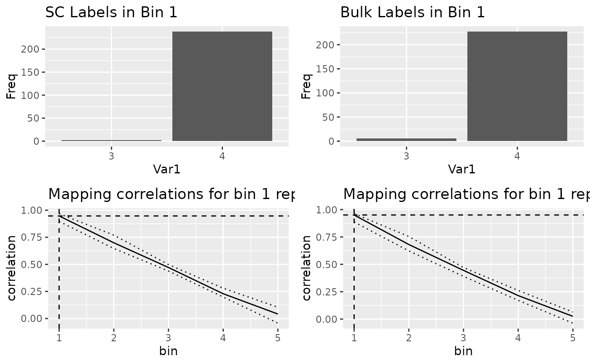
gridExtra::grid.arrange(
blase::plot_bin_population(sc_sce, 2, group_by_slot="label") + ggtitle("SC Labels in Bin 2"),
blase::plot_bin_population(bulk_sce, 2, group_by_slot="label") + ggtitle("Bulk Labels in Bin 2"),
blase::plot_mapping_result_corr(mapping_results[[3]]) + ggtitle("Mapping correlations for bin 2 rep. 1"),
blase::plot_mapping_result_corr(mapping_results[[4]]) + ggtitle("Mapping correlations for bin 2 rep. 2"),
ncol=2
)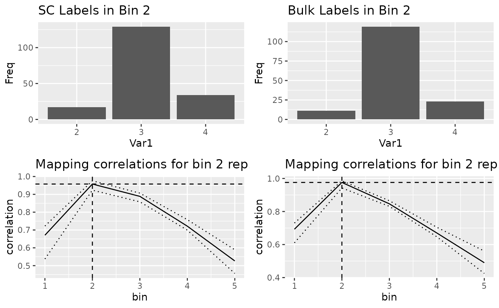
gridExtra::grid.arrange(
blase::plot_bin_population(sc_sce, 3, group_by_slot="label") + ggtitle("SC Labels in Bin 3"),
blase::plot_bin_population(bulk_sce, 3, group_by_slot="label") + ggtitle("Bulk Labels in Bin 3"),
blase::plot_mapping_result_corr(mapping_results[[5]]) + ggtitle("Mapping correlations for bin 3 rep. 1"),
blase::plot_mapping_result_corr(mapping_results[[6]]) + ggtitle("Mapping correlations for bin 3 rep. 2"),
ncol=2
)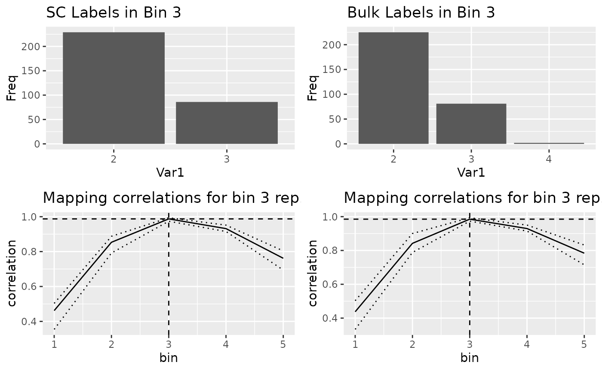
gridExtra::grid.arrange(
blase::plot_bin_population(sc_sce, 4, group_by_slot="label") + ggtitle("SC Labels in Bin 4"),
blase::plot_bin_population(bulk_sce, 4, group_by_slot="label") + ggtitle("Bulk Labels in Bin 4"),
blase::plot_mapping_result_corr(mapping_results[[7]]) + ggtitle("Mapping correlations for bin 4 rep. 1"),
blase::plot_mapping_result_corr(mapping_results[[8]]) + ggtitle("Mapping correlations for bin 4 rep. 2"),
ncol=2
)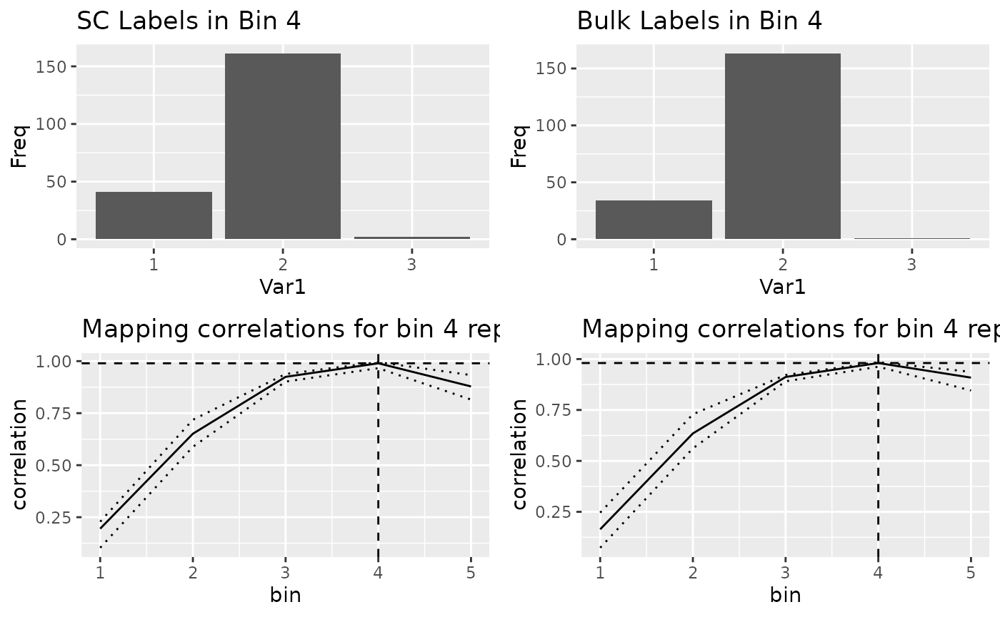
gridExtra::grid.arrange(
blase::plot_bin_population(sc_sce, 5, group_by_slot="label") + ggtitle("SC Labels in Bin 5"),
blase::plot_bin_population(bulk_sce, 5, group_by_slot="label") + ggtitle("Bulk Labels in Bin 5"),
blase::plot_mapping_result_corr(mapping_results[[9]]) + ggtitle("Mapping correlations for bin 5 rep. 1"),
blase::plot_mapping_result_corr(mapping_results[[10]]) + ggtitle("Mapping correlations for bin 5 rep. 2"),
ncol=2
)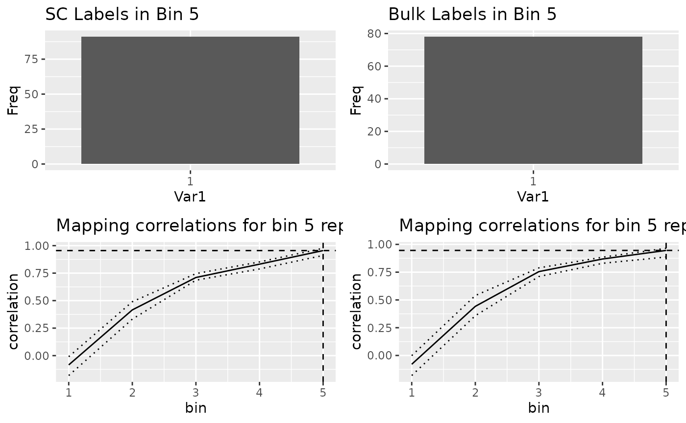
Session Info
sessionInfo()
#> R version 4.4.0 (2024-04-24)
#> Platform: x86_64-pc-linux-gnu
#> Running under: Ubuntu 22.04.4 LTS
#>
#> Matrix products: default
#> BLAS: /usr/lib/x86_64-linux-gnu/openblas-pthread/libblas.so.3
#> LAPACK: /usr/lib/x86_64-linux-gnu/openblas-pthread/libopenblasp-r0.3.20.so; LAPACK version 3.10.0
#>
#> Random number generation:
#> RNG: Mersenne-Twister
#> Normal: Inversion
#> Sample: Rounding
#>
#> locale:
#> [1] LC_CTYPE=C.UTF-8 LC_NUMERIC=C LC_TIME=C.UTF-8
#> [4] LC_COLLATE=C.UTF-8 LC_MONETARY=C.UTF-8 LC_MESSAGES=C.UTF-8
#> [7] LC_PAPER=C.UTF-8 LC_NAME=C LC_ADDRESS=C
#> [10] LC_TELEPHONE=C LC_MEASUREMENT=C.UTF-8 LC_IDENTIFICATION=C
#>
#> time zone: UTC
#> tzcode source: system (glibc)
#>
#> attached base packages:
#> [1] stats4 stats graphics grDevices utils datasets methods
#> [8] base
#>
#> other attached packages:
#> [1] fs_1.6.4 bluster_1.14.0
#> [3] dyngen_1.0.5 BiocParallel_1.38.0
#> [5] scater_1.32.0 ggplot2_3.5.1
#> [7] scran_1.32.0 scuttle_1.14.0
#> [9] slingshot_2.12.0 TrajectoryUtils_1.12.0
#> [11] princurve_2.1.6 tradeSeq_1.18.0
#> [13] SingleCellExperiment_1.26.0 SummarizedExperiment_1.34.0
#> [15] Biobase_2.64.0 GenomicRanges_1.56.0
#> [17] GenomeInfoDb_1.40.0 IRanges_2.38.0
#> [19] S4Vectors_0.42.0 BiocGenerics_0.50.0
#> [21] MatrixGenerics_1.16.0 matrixStats_1.3.0
#> [23] blase_0.0.0.9000
#>
#> loaded via a namespace (and not attached):
#> [1] RColorBrewer_1.1-3 jsonlite_1.8.8
#> [3] magrittr_2.0.3 ggbeeswarm_0.7.2
#> [5] farver_2.1.1 rmarkdown_2.26
#> [7] RcppXPtrUtils_0.1.2 zlibbioc_1.50.0
#> [9] ragg_1.3.1 vctrs_0.6.5
#> [11] memoise_2.0.1 DelayedMatrixStats_1.26.0
#> [13] htmltools_0.5.8.1 S4Arrays_1.4.0
#> [15] BiocNeighbors_1.22.0 ami_0.1.0
#> [17] SparseArray_1.4.3 sass_0.4.9
#> [19] bslib_0.7.0 htmlwidgets_1.6.4
#> [21] desc_1.4.3 cachem_1.0.8
#> [23] igraph_2.0.3 lifecycle_1.0.4
#> [25] pkgconfig_2.0.3 rsvd_1.0.5
#> [27] Matrix_1.7-0 R6_2.5.1
#> [29] fastmap_1.1.1 GenomeInfoDbData_1.2.12
#> [31] digest_0.6.35 colorspace_2.1-0
#> [33] patchwork_1.2.0 metR_0.15.0
#> [35] dqrng_0.3.2 irlba_2.3.5.1
#> [37] textshaping_0.3.7 beachmat_2.20.0
#> [39] labeling_0.4.3 lmds_0.1.0
#> [41] fansi_1.0.6 polyclip_1.10-6
#> [43] httr_1.4.7 abind_1.4-5
#> [45] mgcv_1.9-1 compiler_4.4.0
#> [47] remotes_2.5.0 GillespieSSA2_0.3.0
#> [49] withr_3.0.0 backports_1.4.1
#> [51] viridis_0.6.5 highr_0.10
#> [53] ggforce_0.4.2 MASS_7.3-60.2
#> [55] proxyC_0.4.1 DelayedArray_0.30.1
#> [57] tools_4.4.0 vipor_0.4.7
#> [59] beeswarm_0.4.0 dynutils_1.0.11
#> [61] glue_1.7.0 nlme_3.1-164
#> [63] grid_4.4.0 checkmate_2.3.1
#> [65] cluster_2.1.6 generics_0.1.3
#> [67] gtable_0.3.5 tzdb_0.4.0
#> [69] tidyr_1.3.1 data.table_1.15.4
#> [71] hms_1.1.3 BiocSingular_1.20.0
#> [73] tidygraph_1.3.1 ScaledMatrix_1.12.0
#> [75] metapod_1.12.0 utf8_1.2.4
#> [77] XVector_0.44.0 ggrepel_0.9.5
#> [79] pillar_1.9.0 stringr_1.5.1
#> [81] limma_3.60.0 splines_4.4.0
#> [83] tweenr_2.0.3 dplyr_1.1.4
#> [85] lattice_0.22-6 tidyselect_1.2.1
#> [87] locfit_1.5-9.9 pbapply_1.7-2
#> [89] knitr_1.46 gridExtra_2.3
#> [91] edgeR_4.2.0 xfun_0.43
#> [93] graphlayouts_1.1.1 statmod_1.5.0
#> [95] stringi_1.8.4 UCSC.utils_1.0.0
#> [97] yaml_2.3.8 evaluate_0.23
#> [99] codetools_0.2-20 ggraph_2.2.1
#> [101] tibble_3.2.1 cli_3.6.2
#> [103] systemfonts_1.0.6 munsell_0.5.1
#> [105] jquerylib_0.1.4 Rcpp_1.0.12
#> [107] parallel_4.4.0 pkgdown_2.0.9
#> [109] readr_2.1.5 assertthat_0.2.1
#> [111] sparseMatrixStats_1.16.0 viridisLite_0.4.2
#> [113] scales_1.3.0 purrr_1.0.2
#> [115] crayon_1.5.2 rlang_1.1.3
#> [117] cowplot_1.1.3